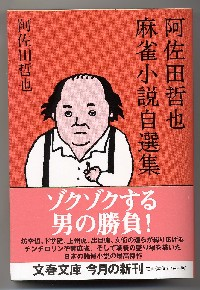

阿佐田哲也の自選集（H14.12.10・文芸春秋社）。要するに、自分の作品の中で、「俺はコレが気に入っている」という作品を収録した本。内容は、「麻雀放浪記・青春編」と、短編集である「雀豪列伝」がそのまま。あと短編が７本収録してある。自選集だけあって、収録作品はどれもこれも名作ばっかり。

実はこの自選集、昭和50年３月にＡ５版上製で双葉社から出版されている。Ａ５版だからかなり大振りで、赤色の函付きの立派な本。ところが値段が高かったせいか発行部数も少なく、地方で入手できた人は少なかった。σ(-_-)もその時点では出版されたことを知らなくて、知った時には手遅れだった。結局、裏から手を回して入手した。（^ー^）
いまとなっては、その大判を入手するのは、ちと難しい。そこでこの文庫本を入手するのが一番と思う次第。
麻雀放浪記は「青春編」、「風雲編」、「激闘編」、「番外編」の４部編からなるが、σ（^-^）も、この第一部の青春編が一番好き。
前にもどこかのページで書いたけど、週刊大衆に「青春編」が連載されていたとき、リアルタイムで読みふけった。出目徳が坊や哲に大四喜爆弾を披露するシーンなど、ホントに迫力満点だった。
しかし当時すでに麻雀本をぼちぼちコレクトしていたが、週刊誌までは思いが至らなかった。そこで、せっかくの超貴重資料も読んだら読み捨て。ああ、返すがえすも残念だ....（号泣、涕泣、すすり泣き）
大宅壮一記念館には収録週刊誌が全部在庫している事は知っているけれど、まさか押し入るわけに行かないし。誰か透明人間になる薬をゆずってくれないか....（笑）
雀豪列伝の中のお気に入りは、天和の職人とブー大九郎。
天和の職人は、阿佐田哲也名義の最初の作品。この短編の原稿を双葉社の担当者が読んで、すぐ追加注文を出したという阿佐田哲也の出世作。オチを知っているとなんと言うことはない感じだが、最初に読んだときは、坊や哲と同じにアッと驚いた。（笑）
ブー大九郎は、そのストーリー、描写力にほとほと感心した。なんど読み返しても迫力満点。
短編集も名作ぞろいであるが、σ(＾ー＾)ももっともお気に入りは「茶木先生、雀荘に死す」。
ストーリーはなんということはないが、その中に主人公（阿佐田哲也）が、茶木先生に手筋の指導解説をするシーンがある。
       ドラ ドラ
これが茶木先生の手。とてもいい手だ。何も無ければ多くの人がを切るだろう。ところが親がリーチをかけている。親は  を切ってはいるが、どうもは危険そう。ならかいうと、ドラがのうえに、 を切ってはいるが、どうもは危険そう。ならかいうと、ドラがのうえに、 と と をポンして筒子混一をやってる人もいる。さぁ、困ったというところ。 をポンして筒子混一をやってる人もいる。さぁ、困ったというところ。
で、茶木先生はさんざん考えてを打ち、 に受けた。は無事通ったが、結局、２巡後に親がをツモあがった。茶木先生はアガれなかったが、アタリ牌をピタリと抑えたことで大満足。しかしそれに対して、後から坊や哲が指導する。
私はメモ用紙を店で借りて、最前の手を記した。
「簡単にいっちまえば、持ち点によりますが、あのとき点差はたいして開いていませんでした。筋のいい打ち手なら打ちです。 とおろしていく。親がリーチ前に、リーチ後にを捨てていましたしね」
「オリるんですか、あの手を」
「いや、廻るんです」
「でも二盃ロがなくなる」
「ええ、ピンズをあとで持ってきたとき、 、どれでもテンパイに復活できます。特にはドラだしね。それ以外の危険牌ならば、仕方ありません。打ちです」 、どれでもテンパイに復活できます。特にはドラだしね。それ以外の危険牌ならば、仕方ありません。打ちです」
「は当りですよ」
「あの場合の結果をあまり重視しない方がいいです」
まずこのくだりを読んで、目からウロコがボロボロボロリ(゜0゜)。当時のσ(-_-)の頭では、茶木先生と同じで、かかの選択しかない。 落としなんて考えもせん。（な〜るほどォ。上級者ともなると、そう打つのかぁ）といたく感じいったことを覚えている。
※を残した場合、 引きでもテンパるが、原文のママとした。
まことに「言われてみればもっとも」、そこで、ちったぁマシになった最近は、坊や哲の言うとおり、 落としのような打ち方をしている。
「ウソつけ、このヤローッ。いまだってかを切っているだろう」というあなた。それはひどい。間違ってもそんなことは....している....かも(_ _；
し、しかし....茶木先生と違うところが一カ所ある。σ(-_-)はモノも言わずにを切っている。それでアタったとしても、そんなもん、で待つ方が悪い。（笑）
そいでいたく感じいった、その後のくだり。
「そんな無茶な」
「ですが、そうなのです。第二の策ですが、テンパイを保持するのなら、よりはを打つ手です」
「おかしいな、放銃しては何にもならないでしょう」
「放銃は結果でしょう。その前にが放銃脾だとわかりましたか」
「わかりました。勘が来たのです」
「あとになってそう思えたんでしょう。何か考えておられたようだけど、考えることはべつに無くて、決断がつかなかったわけでしょう。勘を利かせる麻雀は最高の打ち方だと僕も思いますが、それははじめから別の手筋になっていきます。勘でいけば四巡目だろうと、国士放銃は事故でなく大エラーになるでしょう」
茶木先生は不快気にちょっとだまりこんだ。
別に今でもやってる切りを（ついに開きなおったぞ（笑））少しでも正当化しようとして引用したのではない（こともない(笑) ）。σ（-_-）はただイケイケぶんぶんで打ってるだけだが、少なくとも迷いマージャンではないぞ、と云いたいだけである。で、そんなことより、さらにさらに大事なのは次のくだり。
「本能を完全に生かせないならば、セオリーを深めるべきです。あの手はを打つよりを打った方が、ずっと奥の深い手になる。との危険度が同じならば、奥が深く、手幅が広く、あとの変化に耐えうる牌形にすべきです」
「がとおったとしてどう変化させます」
「危険牌を握れば、おとしです。あとはその危険牌の生き方如何で、ソーズを刻子に持っていくか、とオロしていくか、一丁が拠点になるかならないかで、この場合大変ちがいます。麻雀はそういうものです」
「何故そう断言できるのです。麻雀にこの一手なし、絶対の正解などないでしょう」
「ええ、そうです」と私はいった。
「あの場合の完全な正解はありません。しかし、長く打ってるとああいうケースはよくあるでしょう。を打って損するのは三割、を打って損するのは七割の確率とすれば、いつもを打つことをまず覚える必要があるのです。これは基本フォームですよ」
「そのフォームができないうちに手前勝手な勘打ちをすると、麻雀の伸びがとまるばかりでなく、どんどんエスカレートして手前勝手なだけの麻雀になります。これはカモの道です。を打って放銃するより、をとおして成功したと思う万が一層悪い結果を生むのです」
阿佐田哲也って、ホントに文章がうまいなぁ。小説なのに感心しちゃって、しばらく景色を眺めちゃった。（゜-゜）トオイメ....ヘタな戦術本を読むヒマがあったら、このくだりを百回、読んだ方が役に立つ。
|